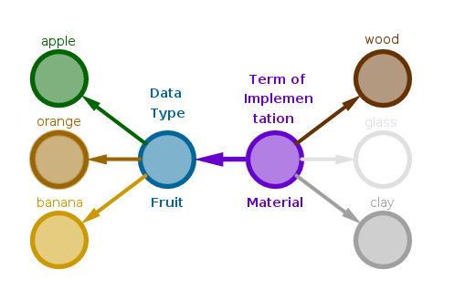

The Bridge pattern may be used to separate a data type's interface from a multitude of terms of its implementation.
Let an abstract data type have \(m\) concrete data types each of which may use a common entity - a term of implementation - which has \(n\) different varieties.
From elementary combinatorial analysis we recall the Fundamental Multiplication Counting Principle (for two sets):
let \(S_1\) be a set of items \(a_j, j = 1, 2, \dots, m: |S_1| = m\) and \(S_2\) be a set of items \(b_k, k = 1, 2, \dots, n: |S_2| = n\). If, regardless of the previous outcomes, for each choice of item \(a_j\) from \(S_1\) there are exactly \(n\) choices of items \(b_k\) from \(S_2\) then the size of the set \(S\) comprised of ordered pairs \((a_j, b_k)\) is equal to \(m \times n\):
$$|S| = |S_1| \times |S_2| = m \times n$$The above principle, which is a direct consequence of the Fundamental Addition Counting Principle since repetitive addition of integers is multiplication, can be extended to an arbitrary finite number of sets.
The resulting set \(S\) of ordered pairs is called a Cartesian Product. Instead of viewing \(S\) as such let us partition it into some number of pairwise disjoint subsets in which the choice of \(a_j\) is fixed while the choices of \(b_k\) run their entire course:
$$\sigma_j = \{(a_j, b_1), (a_j, b_2), (a_j, b_3), \dots, (a_j, b_n)\}$$Since there are \(n\) \(b_k\) items in total, the size of one such subset will be \(n\), \(|\sigma_j| = n\). Since there are \(m\) choices for item \(a_j\), it follows that there will be \(m\) such subsets. Lastly, to calculate the size of \(S\) we have to add \(n\) to itself \(m\) times:
$$|S| = \sum_{j=1}^m |\sigma_j| = \sum_{j=1}^m n = m \times n$$The above reasoning gives us a practical way to enumerate the members of \(S\), manually or programmatically.
For example, let an abstract data type fruit have \(m = 3\) concrete data types, apple, orange and banana, each of which may be implemented, sculpted or manufactured, using a common term, material, of which there are \(n = 3\) different types: wood, glass and clay. Formally:
$$S_1 = \{ apple, orange, banana \}, |S_1| = m = 3$$ $$S_2 = \{ wood, glass, clay \}, |S_2| = n = 3$$Partitioning the above sets into C source code files the direct way, which combines one concrete material and one concrete fruit into one translation unit, we obtain:
or \(m \times n = 3 \times 3 = 9\) files in total.
Further, the addition of a new concrete fruit to the above set when the number of materials is kept constant will require the addition of \(n = 3\) .c files and the addition of a new material when the number of fruits is kept constant will require the addition of \(m = 3\) .c files.
Using Bridge, on the other hand, we separate the fruit, an abstract data type, from material, a term of its implementation, by branching out material into a stand-alone (abstract) data type and adjusting fruit's functions to accept material as a formal argument.
Partitioning \(S_1\) and \(S_2\) into C source code files the Bridge way we obtain:
The above arrangement now falls under the jurisdiction of the Fundamental Addition Counting Principle:
if a set \(S\) is partitioned into a finite number of \(n\) subsets \(S_1, S_2, \dots , S_n\) disjoint pairwise then the total number of items in \(S\) is equal to the sum of item counts in each subset \(S_j, j = 1, 2, \dots , n\):
$$|S| = |S_1| + |S_2| + \dots + |S_n| = \sum_{j=1}^n S_j$$The "disjoint pairwise" requirement is of paramount importance - if it is not met then the Addition Counting Principle does not apply and a different - Inclusion Exclusion Counting Principle (not shown here) - must be used.
In our case there are two sets and the earlier product, \(m \times n\), is replaced with a sum, \(m + n = 3 + 3 = 6\):
Further, though in practice nothing is guaranteed, theoretically the addition of a new concrete fruit to the above arrangement will require the addition of one .c file and the addition of a new material will require the addition of one .c file also.
Now that a way to bridge an abstract data type and one term of its implementation is understood, an arbitrary (finite) number of terms may be bridged to a data type by repetition of the above procedure.
The Bridge pattern consequences:
Sample Problem
Implement a multitude of mock reports which write out the contents of an arbitrarily sized C array of C integers as:
Generic Solution Description
1) Identify all the data type's terms of implementation and branch them out into stand-alone data types that possess the ability to attach a multitude of similar but different implementations to a single interface.
2) Adjust the corresponding functions of a data type to accept variables of data types representing terms of its implementation as formal arguments.
3) Provide a mechanism for terms of implementation to be selected within or attached to a data type.
Sample Solution
Step 1
One of the terms of report's implementation is the destination of data which could be: disk files, TCP or UNIX Domain sockets, an e-mail, etc.
Implement report's data destination as bio_t borrowing the relevant files, libbio.h and libbio.so, from Factory chapter.
Step 2
Implement reports as report_t Factory, selecting line reports via "l", column reports via "c" and North-West to South-East diagonal reports via "nwd" strings:
Step 3
Bridge the report with the destination of its output in report's write() function by making it accept bio_t* as one of its arguments.
This arrangement will also serve as a mechanism by which a concrete term of implementation is attached to a data type making it possible to:
librprt.h:
#include <sys/types.h> #include "libbio.h" typedef struct rprt { int ( *write )( struct rprt*, int [], size_t, bio_t* ); const char* ( *name )(); size_t ( *sizeOf )(); void ( *destruct )( struct rprt* ); } rprt_t; extern rprt_t* rprtNew( const char* ); extern void rprtDelete( rprt_t** ); extern rprt_t* rprtConstruct( void*, const char* ); extern void rprtDestruct( rprt_t* ); extern size_t rprtSizeOf( const char* ); extern int rprtWrite( rprt_t*, int [], size_t, bio_t* ); extern const char* rprtName( rprt_t* ); extern size_t rprtsizeof( rprt_t* );
Step 4
Implement the report factory proper and its three concrete types - line, column and North-West to South-East diagonal.
We will not show the remaining mechanical details here - finish this step by yourself, consult Factory chapter if needed.
Below are our sample implementations of the corresponding write() functions only.
librprtl.c:
static int rprtWriteL( rprt_t* rprt, int input[], size_t inputsz, bio_t* dst ) { size_t i; char* sp; char* nl; char b[ 512 + 1 ]; rprtl_t* rprtl = ( rprtl_t* )rprt; for ( i = 0; i < inputsz; i++ ) { sp = " "; nl = ""; if ( i == 0 ) { sp = ""; } if ( i == ( inputsz - 1 ) ) { nl = "\n"; } snprintf( b, sizeof( b ), "%s%d%s", sp, input[ i ], nl ); bioWrite( dst, b, strlen( b ) ); } return 1; }
librprtc.c:
static int rprtWriteC( rprt_t* rprt, int input[], size_t inputsz, bio_t* dst ) { size_t i; char b[ 512 + 1 ]; rprtc_t* rprtc = ( rprtc_t* )rprt; for ( i = 0; i < inputsz; i++ ) { snprintf( b, sizeof( b ), "%d\n", input[ i ] ); bioWrite( dst, b, strlen( b ) ); } return 1; }
librprtnwd.c:
static int rprtWriteNWD( rprt_t* rprt, int input[], size_t inputsz, bio_t* dst ) { size_t i; size_t j; char b[ 512 + 1 ]; size_t bsz = sizeof( b ) - 1; rprtnwd_t* rprtnwd = ( rprtnwd_t* )rprt; for ( i = 0; i < inputsz; i++ ) { for ( j = 0; j < i && j < bsz; j++ ) { b[ j ] = ' '; } snprintf( b + j, sizeof( b ) - strlen( b ), "%d\n", input[ i ] ); bioWrite( dst, b, strlen( b ) ); } return 1; }
Step 5
Build the report factory.
SLBTF:
gcc -D_GNU_SOURCE -g -c -fPIC -I . librprt.c gcc -g -c -fPIC -I . librprtl.c gcc -g -c -fPIC -I . librprtc.c gcc -g -c -fPIC -I . librprtnwd.c gcc -g -shared -o librprt.so \ librprt.o \ librprtl.o \ librprtc.o \ librprtnwd.o -ldl
MLBTF:
gcc -D_GNU_SOURCE -g -c -fPIC -I . librprt.c gcc -g -shared -o librprt.so librprt.o -ldl gcc -g -c -fPIC -I . librprtl.c gcc -g -shared -o librprtl.so librprtl.o gcc -g -c -fPIC -I . librprtc.c gcc -g -shared -o librprtc.so librprtc.o gcc -g -c -fPIC -I . librprtnwd.c gcc -g -shared -o librprtnwd.so librprtnwd.o
MLRTF:
Add the -DRPRT_MLRTF option to the librprt.so library's build line:
gcc -D_GNU_SOURCE -DRPRT_MLRTF -g -c -fPIC -I . libbio.c
Step 6
Write a sample program to exercise the Bridge pattern.
Our version accepts report type, destination type and address and up to \(100\) integers from the command line, opens the destination address and sends the report there.
rprt.c:
#include <stdio.h> #include "librprt.h" extern int main( int argc, char* argv[] ) { int i; const char* rprtnm; const char* dstnm; const char* dstadrs; bio_t* dst; rprt_t* rprt; int input[ 100 ] = { 0 }; size_t inputsz = 0; if ( argc < 5 ) { return -1; } rprtnm = argv[ 1 ]; dstnm = argv[ 2 ]; dstadrs = argv[ 3 ]; rprt = rprtNew( rprtnm ); dst = bioNew( dstnm ); for ( i = 0; i < ( argc - 4 ) && i < 100; i++ ) { input[ i ] = atoi( argv[ i + 4 ] ); inputsz++; } bioOpen( dst, dstadrs ); rprtWrite( rprt, input, inputsz, dst ); rprtDelete( &rprt ); bioDelete( &dst ); return 0; }
Step 7
Build the sample application.
SLBTF and MLRTF:
gcc -g -c -I . rprt.c gcc -g -L . -o rprt rprt.o -lrprt -lbio
MLBTF:
gcc -g -c -I . rprt.c gcc -g -L . -o rprt rprt.o -lrprt -lbio \ -lrprtl \ -lrprtc \ -lrprtnwd
Step 8
Run the sample program with various inputs:
./rprt l file rl 1 2 3 4 5 6 7 8 9 cat rl 1 2 3 4 5 6 7 8 9 ./rprt c file rc 1 2 3 4 5 6 7 8 9 cat rc 1 2 3 4 5 6 7 8 9
Exercises
1) Assuming that all three types of I/O Factory are implemented write a shell script based on rprt that sends all the types of reports to all the types of destinations.
How many reports will be generated in total?
2) Add a North-East to South-West diagonal report type to our reports factory.
3) Another popular report's term of implementation is output format.
Bridge plain text and html output formats into our reports factory preserving its geometric nature.
Files
librprt.h librprt.c librprtl.c librprtc.c librprtnwd.c mklib.sh
\(\blacksquare\)